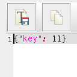

Oktober 2022
EpochDateFormat.java
31.10.2022

Nachdem ich neulich festgestellt habe - voller Verwunderung festgestellt - dass es keine Möglichkeit gibt, mittels der in Java zur Verfügung stehenden DateFormat-Implementierungen Unix-Epochs zu parsen und zu erzeugen, musste ich selbst zur Tastatur greifen...
"Funktionale" Programmierung in dWb+
31.10.2022

Nach meinem letzten Artikel zum Thema dWb+ ist bereits einige Zeit vergangen. Ich habe lange überlegt, wie ich eine Anwendung schreiben könnte, die mir gestattet, mit einem System herumzuspielen, das ich aus dem Buch von Prof.Strogatz kannte.
Tail -f ist eine schlechte Idee
23.10.2022

In meinem $dayjob musste ich vor einigen Monaten einmal einen Bug untersuchen. Das hat eine (für mich) überraschenende Tatsache ans Licht gebracht und mich wieder daran erinnert, was ich zum Thema Forensik gelernt habe: Man braucht Zeit und Ruhe, um das Problem und die hinterlassenen Zeichen gründlich zu untersuchen und so zum Kern des Problems vorzudringen.
Neues Interface für Plugins
23.10.2022
Während der Umstellung meiner Codebasis auf Java in der Version 17 schien es kurzzeitig so zu sein, dass diese Umstellung einen deutlich höheren Aufwand benötigen würde als ursprünglich angedacht: viele der Plugins der sQLshell funktionierten nicht mehr.
BPMN-Modeler in Docker
15.10.2022

Ich habe mich wegen meiner Tätigkeit @dayjob - und weil das Geld für die Kuchenzutaten irgendwoher kommen muss - in letzter Zeit mit BPMN 2.0 beschäftigt und bin dabei auf eine Javascript-Bibliothek namens bpmn-js gestoßen, die die Grundlage vieler im Netz zu findender Editoren darstellt
sQLshell Version 7.6 bringt Unterstützung für den Datentyp JSON
15.10.2022

Eine neue Version der sQLshell ist verfügbar! Sie bringt ebenfalls Unterstützung für einen neuen Datentyp.
Visual Studio Code im Browser
03.10.2022

Und wieder ist ein neuer Container in meinen Docker-Zoo aufgenomen worden.
LinkCollections 2022 XIII
03.10.2022

Nach der letzten losen Zusammenstellung (für mich) interessanter Links aus den Tiefen des Internet für dieses Jahr folgt hier nunmehr die nächste:


Tags
Januar 2024 Dezember 2023 November 2023 Oktober 2023 September 2023 August 2023 Juli 2023 Juni 2023 Mai 2023 April 2023 März 2023 Februar 2023 Januar 2023 Dezember 2022 November 2022 Oktober 2022 September 2022 August 2022 Juli 2022 Juni 2022 Mai 2022 April 2022 März 2022 Februar 2022 bis zum Januar 2022 Upcoming...
Manche nennen es Blog, manche Web-Seite - ich schreibe hier hin und wieder über meine Erlebnisse, Rückschläge und Erleuchtungen bei meinen Hobbies.
Wer daran teilhaben und eventuell sogar davon profitieren möchte, muß damit leben, daß ich hin und wieder kleine Ausflüge in Bereiche mache, die nichts mit IT, Administration oder Softwareentwicklung zu tun haben.
Ich wünsche allen Lesern viel Spaß und hin und wieder einen kleinen AHA!-Effekt...
PS: Meine öffentlichen GitHub-Repositories findet man hier - meine öffentlichen GitLab-Repositories finden sich dagegen hier.